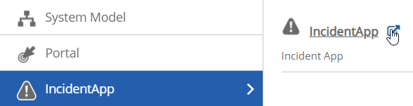
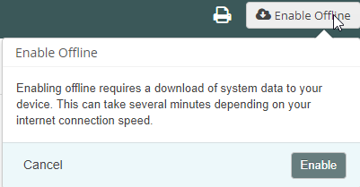
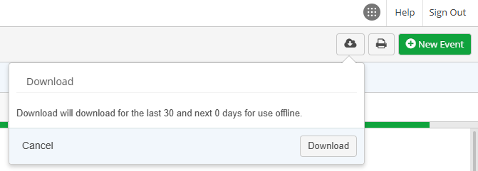
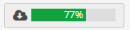
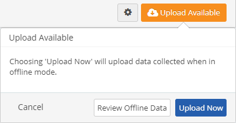
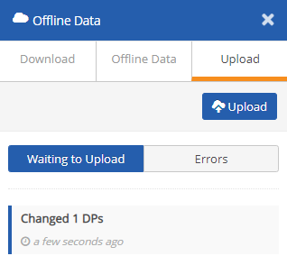
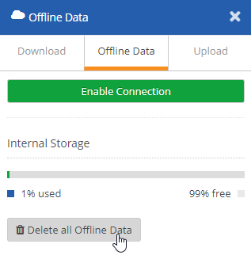
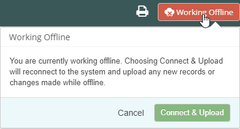

When you are online (connected to the Internet and logged into the system), any work you do is automatically saved to the system when you click Save. If you need to work in areas where an internet connection is not available, you can download data from the App online, then disconnect and work offline, saving your changes to your cache. You can also create new items while offline. When you are reconnected, you can then upload your changes.
These instructions apply to working offline in the IncidentApp, Management of Change App, or any custom app using the Workflow App Builder framework.
Before working offline:
Create an App Bookmark
Bookmark the app in your browser so you can access it later. If you do not see a menu button on the top right of the page, you can simply save the page to your browser bookmarks. If you have access to other EMS Apps or other pages, you will need to first open the app in its own tab.
From the main menu, select the app and click the pop-out button to open the app in its own browser tab.

After the page loads in a new tab or window, add the page to your browser bookmarks or favorites. If you close your browser and re-open it later, use the bookmark to access the page. You will then be able to access any data that you have added to your offline cache. When connection is restored, the system will automatically switch to online mode and request sign-on.
Enable Offline Access
If you have not already done so, you will need to enable offline access. This process downloads data from your system that is required for offline work (such as system model tree info, custom fields, permissions and user groups required for the app functions). Depending on the amount of data, the download may take several minutes.
Click the Download button. In the confirmation dialog, click Download.

After the necessary information has been downloaded, the Work Offline button will be displayed. Subsequently, any changes will be automatically downloaded when you reload the app.
If you clear the cache on your device, you will need to re-enable online access and download the system information again.
Click Work Offline to download the items you want to work with before disconnecting.
Use your App bookmark to open the app when you are ready to work, if you have navigated away in the meantime.
Open your work items and complete the forms while offline and save your work as usual. Your changes will be saved to your cache. You may also create new items.
Once you are reconnected, upload the data to the system. The Upload Available button will let you know that there is data in your cache that needs to be uploaded to the system.
When the GPS is enabled and used the first time, the pop-up window appears asking you to allow the collection of the physical location. Click Allow.
To download items for working offline:
While connected, click Work Offline.

Click Download to download recent records. The progress bar indicates that the download is in process.

If you open an item from the Search bar it will be automatically downloaded for working offline, as indicated by the cloud icon in the search bar to the right of the name.
When the download is complete, you can disconnect or safely move out of internet range.
If you are still connected but want to disconnect manually, click Work Offline again and choose Work Offline from the dialog.
The Working Offline button on the top bar indicates the disconnected status.
If you close your browser and re-open it later, use your app bookmark to open the app.
Complete your work as usual, and save any changes. The changes will be saved to your cache.
Once connection is re-established, the Upload Available button will show if there is data available to be uploaded.
Select Upload Available.

Click Upload Now to upload immediately.
Or click Review Offline Data if you want to review the data waiting to be uploaded first. The Offline Data dialog will open showing the data waiting to upload.

To upload the data, click Upload.
To delete the data, select the Offline Data tab. Click Delete all Offline Data, then Delete to confirm.

Deleting offline data will delete data that has been downloaded to your cache from the system while online, as well as any data you have created while offline. You will need to re-download data from the system to work with it offline.
Clearing the cache in your browser before uploading data will cause loss of any data created offline.
To manually re-enable a connection:
Click the Working Offline button and select Connect & Upload.

To change download defaults:
Select Offline Settings from the main menu button.
Select the Download tab and set the options as desired.
Last [..] Days: Days of data in the past to download. (Default is 30 days.)
Next [..} Days: Days of data in the future (such as scheduled inspections) to download.
Include Items Assigned to Others is Off by default, meaning that only items assigned to you will be downloaded. If you have permission, you can turn this ON to download items assigned to others.
 to open the app in its own browser tab.
to open the app in its own browser tab.